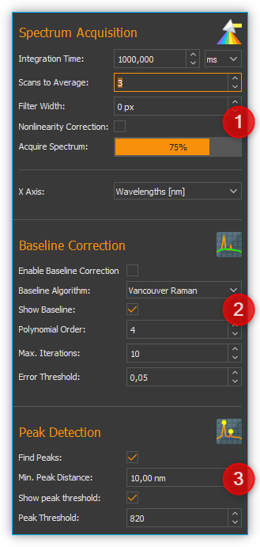
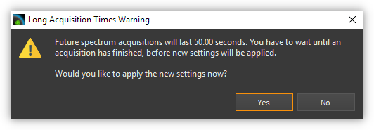
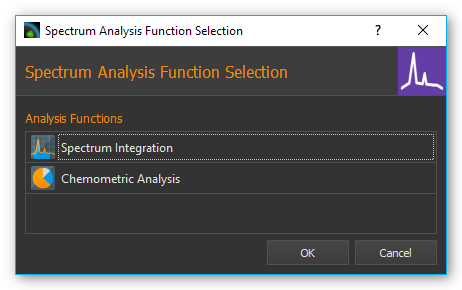
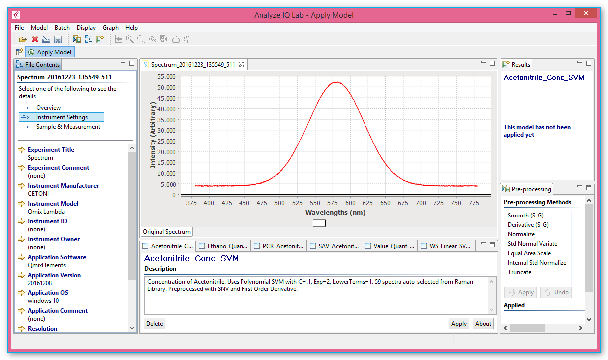

23. Spektroskopie Add-on
23.1. Installation
Das Spektroskopie Add-on ist nicht im Standard Installationspaket enthalten, sondern muss als Add-on zusätzlich installiert werden. Die Versionen von Spectroscopy Plugin und installierter CETONI Elements Software sollten übereinstimmen. Wenn Sie z.B. das Spectroscopy Add-on mit der Versionsnummer 20150520 installieren möchten, sollte die CETONI Elements Software mit der Versionsnummer 20150520 installiert sein.
Wichtig
Die Versionsnummer der CETONI Elements Software und des Spectroscopy Add-ons sollten übereinstimmen.
Bitte schließen Sie vor der Installation alle anderen Programme.
Wichtig
Installieren Sie das Spectroscopy Plugin + Gerätetreiber, bevor Sie Ihr Spektrometer erstmalig über USB mit dem PC verbinden.
Starten Sie zur Installation die Datei
CETONI_Elements_Spectroscopy_Setup_64bit.exe. Der
Installationsassistent führt Sie anschließend durch die Installation der
Software- und Hardware-Treiber.
Wichtig
Unter Windows müssen Sie mit Administratorrechten angemeldet sein, um die Installation der Hardware-Treiber durchführen zu können.
Wichtig
Bei der Installation können Sie optional das Analyze IQ Addon installieren für die chemometrische (quantitative und qualitative) Analyse aufgenommener Spektren. Für dieses Addon benötigen Sie eine kostenpflichtige Runtime-Lizenz.
23.2. Einführung
Durch Anklicken der Schaltfläche Spectroscopy ❺ in der Seitenleiste wechseln Sie zum Spectroscopy Plugin (siehe Abbildung unten).

Werkzeugleiste
Karteireiter zur Auswahl der Anzeige eines Spektrometers. Mit den Karteireitern können Sie zwischen den Anzeigen und Steuerelementen der einzelnen Spektrometer wechseln. Für jedes Spektrometer wird ein Karteireiter angelegt.
Spektrum Live-Anzeige
Parameter für Spektrenaufnahme und Vorverarbeitung
Schaltfläche Spectroscopy button
23.3. Werkzeugleiste
|
Die Seitenleiste mit den Spektrometereinstellungen ein-/ausblenden |
|
Start / Stopp der Live-Anzeige von Spektraldaten |
|
Aufnahme / Entfernen eines Hintergrundspektrums |
|
Automatische Ermittlung der Integrationszeit starten /stoppen |
Anlegen eines Spektrum-Analyse-Kanals |
|
|
Spektrometereinstellungen aus *.aiq Datei laden. |
|
Speichern der Spektraldaten als Text-Format (.txt) oder als Analyze IQ Datei (.aiq) |
|
Speichern der Spektraldaten als PNG Bilddatei oder PDF Dokument |
|
Panorama Werkzeug zum Verschieben der Spektrum Live-Anzeige |
Zoombereich-Auswahl-Werkzeug (Vergrößerung) |
|
|
X Achse skalieren, um sie auf den sichtbaren Bildschirmbereich einzupassen |
|
Y Achse skalieren, um sie auf den sichtbaren Bildschirmbereich einzupassen |
|
Beide Achsen skalieren, um sie im Bildschirmbereich einzupassen |
{kind=link}
{kind=link}
23.4. Spektrum Live-Anzeige
In der Spektrum Live Anzeige sehen sie stets das aktuelle, zuletzt aufgenommene Spektrum nach allen Verarbeitungsschritten.
Die Peakmarker ❶ zeigen die x- und y-Koordinate eines gefundenen Spektrumpeaks an. Die Linie für die minimale Peakintensität ist gelb dargestellt ❷. Unterhalb dieser Linie werden keine Spektrumpeaks mehr markiert. Wenn Sie in der Baseline Correction die Anzeige der berechneten Baseline aktiviert haben, wird Ihnen diese als rote Kurve ❸ angezeigt. Die X-Achse ❺ zeigt die eingestellte Einheit an (hier Welllenlängen in nm). Die Y-Achse ❹ zeigt die gemessene Intensität in counts.
Mit dem Mausrad können Sie in die Spektren-Anzeige hinein- und herauszoomen.
Wenn das Panorama Tool zum Verschieben des Anzeigebereichs aktiviert ist, können Sie sich die Werte des Spektrums an einer Stelle anzeigen lassen, indem Sie den Mauszeiger an die entsprechende Position über die Kurve bewegen ❻. Es wird dann ein Fenster mit den Werten angezeigt. Wenn Sie den Mauszeiger über die Kurve bewegen, folgt das Fenster dem Mauszeiger und die Werte darin werden kontinuierlich aktualisiert.
23.5. Übersicht Parameter Steuerelemente
Die Steuerelemente kontrollieren Aufnahme und Vorverarbeitung von Spektren. Sie sind dabei in der Reihenfolge von oben nach unten angeordnet, in der auch die Verarbeitung erfolgt
Spectrum Acquisition (Spektrenerfassung) - enthält alle Einstellungen des Spektrometers für die Aufnahme eines Spektrums
Baseline Correction - hier können Sie die Parameter für die Echtzeit-Basislinienkorrektur einstellen
Peak Detection - hier konfigurieren Sie die Parameter für die automatische Peak Erkennung
Mit Hilfe der Spektrum Live-Anzeige können Sie die Auswirkung von Parameteränderungen sofort sehen und bewerten.
23.6. Spektrenaufnahme
23.6.1. Übersicht Bedienelemente für Spektrenaufnahme
Im Bereich Spectrum Acquisition finden Sie alle Bedienelemente zur Einstellung der Aufnahmeparameter.

23.6.2. Integrationszeit einstellen
Die Integrationszeit entspricht der Belichtungszeit des Spektrometer CCDs. Es ist die Zeit, die der Detektor Photonen sammeln kann.
Die Integrationszeit geben Sie im Eingabefeld ❶ ein. Die gewünschte Zeiteinheit im Auswahlfeld ❷. Mit zunehmender Integrationszeit wachsen die Intensitätswerte des Spektrums, da der Detektor länger Photonen sammeln kann.
Tipp
Die Zeitdauer für die Aufnahme eines Spektrums wächst mit zunehmender Integrationszeit.
Ist die Aufnahmedauer größer als 500 Millisekunden, wird unter den Steuerelementen ein Fortschrittsbalken eingeblendet, der Ihnen den Fortschritt der aktuellen Aufnahme zeigt. Ist das Produkt aus Integrationszeit und Scans to Average größer gleich 10 Sekunden, erscheint eine Warnmeldung mit dem Hinweis auf die zukünftige Länge der Integrationszeit. Entweder können die aktuellen Parameter-Einstellungen übernommen werden oder die ursprünglichen Werte bleiben erhalten.
Wichtig
Alle Parameteränderungen werden erst nach Beendigung der aktuell laufenden Spektrumaufnahme ausgeführt. Dadurch kann bei hohen Integrationszeiten der Eindruck entstehen, dass die Software nicht mehr reagiert.
23.6.3. Integrationszeit automatisch ermitteln

Wenn Sie in der Werkzeugleiste die Schaltfläche zur automatischen Ermittlung der Integrationszeit anklicken, versucht die Software die Integrationszeit automatisch so zu regeln, dass die maximale Intensität des Spektrums 80% des maximalen Sensorwertes (Sättigung) erreicht. Sie können die automatische Integrationszeitermittlung jederzeit durch erneutes Anklicken der Schaltfläche stoppen.
23.6.4. Spektrum vorverabeiten
Die Vorverarbeitung von Live-Spektren kann zu einem besseren Signal-Rausch-Verhältnis (Signal-to-Noise-Ratio, SNR) beitragen. Dies reduziert Störeinflüsse bei qualitativer Verbesserung der Spektren. Spektrale Glättung lässt markante Peaks erkennen. Die Beseitigung von Nichtlinearitäten und eine Grundlinienkorrektur der Spektren wirken sich zusätzlich positiv auf deren Qualität aus.

Scans To Average
Dies ist eine zeitliche Mittelwertbildung. Es wird die eingestellte Anzahl von Spektren aufgenommen und dann für jeden einzelnen Bildpunkt der Mittelwert aus allen Aufnahmen gebildet. Das verbessert das Signal-Rausch-Verhältnis (mit steigender Zahl steigt auch das SNR aber auch die Aufnahmedauer)
Filter Width
Dies ist eine räumliche Mittelwertbildung bei der das Spektrum visuell geglättet wird. Dafür wird für jeden Bildpunkt der Mittelwert aus den benachbarten Bildpunkten gebildet. Der eingegeben Wert definiert die Breite des Filters in Pixeln auf der linken und rechten Seite des aktuellen Bildpunktes. (z.B.: Filter Width = 3: Durchschnittsbildung von jedem Datenwert mit seinen 3 linken und 3 rechten Nachbarwerten). Steigt der Wert für Filter Width, wächst der SNR → das Spektrum wird zunehmend glatter. Ein zu hoher Wert für Filter Width führt zur Reduzierung der spektralen Auflösung
Nonlinearity Correction
Diese Funktion korrigiert die zwischen Photonenstrom und Ausgangssignals des CCD Sensors bestehende Nichtlinearität
23.6.5. Einheit der x-Achse wählen
Sie können für die x-Achse verschiedene Einheiten wählen:
Einheit |
Bedeutung |
|---|---|
Wavelengths [nm] |
Wellenlänge der x-Achse in der Einheit Nanometer |
Pixels [px] |
jeder Pixelwert entspricht einem CCD-Sensorelement, Beginn bei 0, Ende bei n-1 (n = Maximalzahl an Sensorelementen) |
Wavelengths [µm] |
Wellenlänge der x-Achse in der Einheit Mikrometer |
Frequency [GHz] |
x-Achsenfrequenz in der Einheit GigaHertz (GHz) |
Wave numbers [1/cm] |
x-Achse in der Einheit von inversen Zentimetern (1/cm) |
Raman shift [Raman] |
x-Achse in Einheit 1/cm - abhängig von Anregungswellenlänge des Lasers |
23.7. Baselinekorrektur
23.7.1. Übersicht Bedienelemente zur Baselinekorrektur
Im Bereich Baseline Correction finden Sie alle Einstellungen für die Realtime-Baselinekorrektur:

Die Baseline-Variation ist ein Problem, das bei vielen Arten von Spektraldaten auftritt. Typischerweise ist es eine lineare oder nichtlineare Addition zu den Spektren, die dazu führt, dass erwartete Nullmessungen einen positiven Wert erreichen. Dies kann z.B. die Fluoreszenz bei der Aufnahme von Raman-Spektren sein. Eine Baseline kann als die langsam variierende Kurve beschrieben werden, die durch den unteren Teil der Spektren verläuft, ohne die Sprünge der Peaks.
Bei der Baselinekorrektur wird durch den gewählten Algorithmus eine Baseline berechnet. Diese wird dann von dem aufgenommenen Spektrum abgezogen um die Baseline-Variation zu korrigieren.
Mit dem Auswahlfeld Enable Baseline Correction ❶ aktivieren oder deaktivieren Sie die Baselinekorrektur. In der Auswahlliste Baseline Algorithm ❷ wählen Sie den Algorithmus zur Berechnung der Baseline aus. Mit dem Auswahlfeld Show Baseline ❸ können Sie auswählen, ob die berechnete Baseline in der Spektrum Live-Anzeige angezeigt wird oder nicht. Auch wenn die Baselinekorrektur ausgeschaltet ist, können Sie die berechnete Baseline anzeigen lassen und so deren Qualität überprüfen (siehe Abbildung unten).

In dem Bereich darunter ❹ finden Sie die Einstellungen für den bei ❷ gewählten Baseline Algorithmus.
23.7.2. Baseline Algorithmen
Vancouver Raman Algorithmus
Der Vancouver Raman Algorithmus wurde entwickelt für die automatisierte Hintergrundentfernung von Autofluoreszenz-im Bereich der biomedizinische Raman-Spektroskopie (vgl. Zhao, J., Lui, H., McLean, D. I., & Zeng, H. (2007). Automated Autofluorescence Background Subtraction Algorithm for Biomedical Raman Spectroscopy. Applied Spectroscopy, 61(11), 1225–1232). Er basiert auf einer modifizierten Multi-Polynom-Anpassung, mit einer zusätzlichen Peak-Entfernung während der ersten Iteration und einer statistischen Methode zur Berücksichtigung von Signalrausch-Effekten.

Für diesen Algorithmus können Sie die folgenden Parameter einstellen:
Polynomial Order – Damit stellen Sie den Grad des Polynoms für die Polynomanpassung ein. Basierend auf empirischen Erfahrungen liefern Polynome vierter bis sechster Ordnung die besten Fluoreszenz-Approximationen.
Max. Iterations – Die maximale Anzahl der Iterationen nach denen die Berechnung abgebrochen wird. D.h. auch wenn der Fehler noch über dem Schwellwert liegt, wird nach der maximalen Anzahl von Iterationen die Berechnung beendet.
Error Threshold – Legt den Schwellwert für den maximalen Fehler als Abbruchkriterium fest. Wird der Schwellwert unterschritten, dann wird die Berechnung beendet. Für 0,95% Sicherheit verwenden Sie z.B. 0,05
Rolling Ball Algorithmus
Der ursprüngliche Rolling Ball Baseline Algorithmus (vgl. M. Kneen and H. Annegarn, Nucl. Instrum. Methods Phys. Res. 82, 59 (1996).) wurde für Röntgenspektren entwickelt. Die berechnete Grundlinie entsteht dabei durch eine gedachte Kugel, die auf der Unterseite des Spektrums entlang rollt. Die Grundlinie ist einfach die Spur des obersten Punktes der Kugel. In drei Schleifen findet der Algorithmus minimale Punkte in lokalen Fenstern, findet maximale Punkte unter den minimalen Punkten und glättet durch Mittelung über die maximalen Punkte.

Für diesen Algorithmus können Sie die folgenden Parameter einstellen:
Min. / Max. Window – Größe der lokalen Fenster zur Berechnung der minimalen und maximalen Punkte zur Identifzierung der Grundlinie.
Smoothing Window– Breite der lokalen Fenster für die Glättung
23.8. Peak-Erkennung
23.8.1. Übersicht
Spitzenwerte in einem Spektrum sind dessen „charakteristischer Fingerabdruck“: Die Identifikation eines Stoffes bzw. Stoffgemisches kann über die horizontale Position der Spitzenwerte (auch Peaks genannt) erfolgen. Zudem ermöglichen die Intensitätswerte von Haupt- und Nebenpeaks Rückschlüsse auf die Höhe der einzelnen Konzentrationen in Stoffgemischen. Im Bereich Peak Detection finden Sie alle Einstellungen für die automatische Peak-Erkennung:

Find Peaks – Schaltet die Erkennung von Peaks ein und aus
Min. Peak Distance - Minimaldistanz (in x-Richtung) zwischen zwei Peakmarkierungen in der eingestellten Einheit der X-Achse.
Show peak threshold - Zeigt den Schwellwert für die Erkennung von Peaks als gelb gestrichelte Linie in der Spektrumdarstellung an
Peak Threshold - Schwellwert für die Peakerkennung – nur Peaks oberhalb des Schwellwerts werden als Peaks erkannt und in der Anzeige markiert.
Tipp
Da die eingetragene minimale Peakdistanz nicht zu 100% genau auf den Plot übertragen wird, experimentieren Sie ein wenig mit dem Wert, um ein für Sie optimales Ergebnis zu erreichen.
Tipp
Zu viele Peakmarkierungen können die Rechenleistung Ihres Computers beeinträchtigen. Es wird nur eine begrenzte Anzahl an Peaks angezeigt.

Anwendungsbeispiel: Eine Peakmarkierung erfolgt nicht, wenn sich der Peak unter der Linie für minimale Peakintensität befindet ❶. Liegt er darüber ❷, erscheint die Markierung. Der letzte Peak bleibt unmarkiert ❸, da die Entfernung von seinem Vorgänger kleiner als die minimale Peakdistanz ist.
Tipp
Beeinträchtigen zu viele Peakmarkierungen die Rechenleistung Ihres Computers, reduzieren Sie die Anzahl an Peakmarkierungen. Erhöhen Sie dazu Minimaldistanz und minimale Peakintensität oder glätten Sie das Spektrum.
23.9. Dunkelspektrum / Hintergrundspektrum entfernen
Das Dunkelspektrum ist der erwartete Signalpegel, wenn kein Licht vorhanden ist. Das Hintergrundspektrum ist der erwartete Signalpegel wenn keine Probe vorhanden ist. Durch Abziehen des Dunkel- / Hintergrundspektrums vom aktuell aufgenommenen Spektrum werden Streulichteinflüsse und das Rauschen des Aufnahmesensors im Ergebnisspektrum reduziert.
Wählen Sie zunächst die Parameter mit den Steuerelementen so, wie Sie sie bei Ihren Messungen auch tatsächlich verwenden. Schalten Sie Ihre Licht- bzw. Laserquelle aus und nehmen Sie ein Hintergrundspektrum auf, indem Sie auf das Glühbirnenicon klicken.

Nun wird automatisch von jedem neu aufgenommenen Spektrum das gleiche Hintergrundspektrum abgezogen.

Sind Sie mit dem Ergebnis unzufrieden, klicken Sie auf das Glühbirnensymbol mit dem roten Kreuz. Dadurch entfernen Sie das Hintergrundspektrum und können die Aufnahme des Hintergrundspektrums wiederholen.
23.10. Spektraldaten & Spektrometereinstellungen speichern

Speichern Sie Ihre Spektraldaten als Textdatei, indem Sie in
der Werkzeugleiste auf das entsprechend Symbol klicken. Sie können das
aufgenommene Spektrum als Text-Datei (*.txt) oder als Analyze IQ Datei
(*.aiq) speichern. Textdateien haben den Vorteil, dass Sie diese einfach
in einem Tabellenkalkulationsprogramm (z.B. Excel) öffnen können, um die
Spektren dort zu analysieren. Analyze IQ Dateien haben den Vorteil, dass
dort zusätzlich Metadaten zu den aufgenommenen Spektraldaten gespeichert
werden. So wird z.B. das Erstellungsdatum, die Einheiten für X und Y
Achse, der Anwender und alle aktuellen Einstellungen des Spektroskops in
einer Analyze IQ Datei gespeichert.
Tipp
Wenn Sie später das Analyze IQ Add-on zur
qualitativen und quantitativen Analyse verwenden
möchten, sollten Sie Ihre Spektren als Analyze IQ Datei
(*.aiq) speichern.
Es öffnet sich ein Dialogfenster, zur Auswahl des Dateinamens und der Dateiformats.

Als Zielverzeichnis wird das Datenverzeichnis des aktuellen Projekts verwendet. Sie können im Dateidialog aber auch ein anderes Verzeichnis wählen.
Wenn Sie als Dateiformat das *.aiq Format ausgewählt haben, wird Ihnen
nun ein Dialog zum Hinzufügen von Metadaten angezeigt.

Hier können Sie durch Anklicken von
Add Meta Data zusätzliche Informationen, wie z.B. Probenname oder
Probenmenge zur *.aiq Datei hinzufügen. Nach dem Klick auf Add Meta Data
erscheint das Eingabefenster zur Auswahl des Metadatennamens und
zur Eingabe des Wertes.
Mit dem Auswahlfeld Meta Data ❶ können Sie entweder ein
vordefiniertes Metadatenfeld auswählen oder ein neues
anwenderspezifisches Metadatenfeld definieren. Ein neues Feld
definierten Sie durch Eingabe eines Namens, der nicht in der Liste
enthalten ist, z.B. Concentration. Die vordefinierten Metadatenfelder
sind im Dateiformat für *.aiq Dateien definiert und werden teilweise in
der externen Analyze IQ Software angezeigt.
Wenn Sie das Metadatenfeld gewählt haben, geben Sie dann im Feld Value ❷ den Wert für das Metadatenfeld ein und schließen Sie die Eingabe durch Anklicken von OK ab.
Wenn Sie ein Metadatenfeld wieder aus der Liste löschen möchten, dann wählen Sie dieses aus und klicken anschließend auf die Schaltfläche Remove Meta Data. Sobald Sie OK klicken wird das letzte aufgenommen Spektrum zusammen mit den aktuellen Spektrometereinstellungen und den Metadaten in eine Datei mit der Endung aiq gespeichert.
Tipp
Wenn Sie Dateien im AIQ Format speichern, können Sie diese später jederzeit in das CSV Format konvertieren mit der Funktion Analyze-IQ Dateien in CSV konvertieren.
23.11. Spektrometereinstellungen laden

Alle Spektrometereinstellungen lassen sich aus vorher
gespeicherten *.aiq Dateien laden. Klicken Sie dafür in der
Werkzeugleiste auf das Symbol Load Spectrometer Settings (*.aiq) und
wählen Sie dann eine *.aiq Datei aus.
23.12. Spektrum Bild speichern
{kind=link}
Durch Anklicken der entsprechenden Schaltfläche in der Werkzeugleiste können Sie das aktuelle Bild des Spektrum-Liveanzeige als PNG-Bild oder als Vektorgrafik in Form eines PDF-Dokuments speichern.
Im Dateidialog der angezeigt wird, können Sie wählen, ob Sie ein PNG-Bild oder PDF-Dokument speichern möchten ❶. Als Zielverzeichnis wird das Bilder-Verzeichnis des aktuellen Projekte vorgegeben. Sie könne im Dateidialog aber auch ein anderes Verzeichnis wählen.

Klicken Sie die Speichern Schaltfläche ❷ um das Bild zu speichern.
23.13. Analyze-IQ Dateien in CSV konvertieren
Wenn Sie Ihre Spektraldaten im Analyze IQ Format (*.aiq) gespeichert
haben, können Sie diese später jederzeit in das CVS Format konvertieren.
Im Hauptmenü finden Sie dafür den Menüpunkt .
Klicken Sie diesen Menüpunkt an, wählen Sie die Analyze-IQ Datei
aus und die Software speichert die Datei dann als CSV-Datei mit dem
gleichen Dateinamen und der Dateiendung *.txt.

23.14. Spektraldaten laden und anzeigen mit dem Spectra Viewer
Mit dem Spectra Viewer steht Ihnen ein Tool zur Verfügung, um
gespeicherte Spektraldaten im Analyze IQ Format (*.aiq) oder im CSV
Format (*.txt) zu öffnen und zu betrachten. Um den Spectra Viewer zu
öffnen, wählen Sie im Hauptmenü den Menüpunkt
.
Alternativ können Sie den Spectra Viewer
auch über die Spectroscopy Schaltfläche in der Sidebar öffnen.
{kind=link}
In der Werkzeugleiste ❶ am oberen Rand finden Sie die einzelnen Funktionen des Spectra Viewers. Die Funktionen sind im Wesentlichen die gleichen Funktionen wie in der Spektrum Live-Anzeige. Durch Rechtsklick mit der Maustaste in den Viewer, können Sie das Kontextmenü mit allen Funktionen aufrufen.
Klicken Sie auf die Schaltfläche Load Spectra Data um Spektrendateien zu öffnen. In dem Dateiauswahldialog der nun angezeigt wird, können Sie eine oder mehrere Dateien auswählen. Die ausgewählten Dateien werden danach im Spectra Viewer angezeigt.
Wie in der Spektren Live-Anzeige können Sie auch hier die Maus über eine Kurve bewegen, um den Wert der Kurve an der betreffenden Stelle anzeigen zu lassen ❷.
Wenn Sie zusätzliche Spektren laden möchten, klicken Sie einfach erneut die Schaltfläche Load Spectra Data. Die neuen Spektren werden dann zu den bestehenden Spektren hinzugefügt.

Klicken Sie auf die Schaltfläche Clear Viewer, um alle Kurven im Spectra Viewer zu löschen.

Mit der Schaltfläche Export Plot Image können Sie das aktuelle Bild im Spectra Viewer als PDF- oder Bilddatei exportieren.
23.15. Echtzeitanalyse mit Hilfe von Analyse-Kanälen
23.15.1. Einführung
Analysekanäle bieten Ihnen die Möglichkeit, Analysen der aufgenommenen Spektraldaten online durchzuführen und die Ergebnisse der Analysen über Analysekanäle in die CETONI Elements Skriptprogrammierung einzubinden. Damit steht Ihnen ein leistungsfähiges Werkzeug zur Verfügung um Spektraldaten online zu analysieren und dann auf Basis der Analyseergebnisse andere Geräte zu steuern oder bestimmte Ereignisse auszulösen.
Für jede Analyse wird ein „analoger“ Eingangskanal in der Liste der I/O Kanäle angelegt (siehe Abbildung unten). Diese Eingangskanäle können wie jeder andere analoge Kanal in das CETONI Elements Scriptsystem eingebunden und ausgewertet werden.

Um einen Analysekanal anzulegen, klicken Sie in der Werkzeugleiste auf die Schaltfläche Create Spectrum Analysis Channel.

Es wird ein Dialog angezeigt, in dem Sie die Analysefunktion auswählen können:
Nachdem Sie die Analysefunktion konfiguriert haben, wird ein Analysekanal in der Liste der I/O-Kanäle eingefügt. Details zu den vorhandenen Analysefunktionen finden Sie in den folgenden Abschnitten.
Tipp
Sie können für ein Spektrometer beliebig viele Analysekanäle anlegen. So können Sie z.B. gleichzeitig die Intensität bei einer bestimmten Wellenlänge messen oder die Intensität des gesamten Signals durch die Integration aller Werte ermitteln.
Durch Anklicken der grünen LED in der ON-Spalte (Abbildung unten) können sie die betreffende Online-Analyse jederzeit aktivieren und deaktivieren. Wenn Sie die Konfiguration eines Analysekanals ändern möchten oder den Kanal löschen wollen, dann klicken Sie mit der rechten Maustaste in den Kanal um das Kontextmenü anzuzeigen (Abbildung unten). Wählen Sie dann aus dem Kontextmenü die gewünschte Aktion aus.
23.15.2. Integrationsfunktion – Spectrum Integration
Mit der Integrationsfunktion können Sie die Intensität der Spektraldaten innerhalb einer bestimmten Bandbreite messen oder die Intensität des Signals bei einer bestimmten Wellenlänge. Dafür legen Sie im Konfigurationsdialog zuerst die Bandbreite ❶ fest, innerhalb derer das Signal integriert werden soll. Wenn Sie die Intensität bei einer bestimmten Wellenlänge messen möchten, tragen Sie für Start Range und End Range die gleichen Werte ein.

Klicken Sie auf die Schaltfläche Apply um die Werte zu übernehmen. Die Software korrigiert die eingegebenen Werte auf die nächstmöglichen Werte die das Spektrometer unterstützt. In der aktuellen Anzeige des Analyseergebnisses ❸ können Sie sofort die Auswirkungen der geänderten Werte sehen. Wenn Sie auf die Schaltfläche OK klicken, werden die eingestellten Wert übernommen und ein neuer Analysekanal angelegt oder der aktuell ausgewählte Kanal aktualisiert.
23.15.3. Chemometrische Analysefunkion – Chemometric Analysis
Die chemometrische Analyse ermöglicht die quantitative und qualitative Bestimmung von Konzentrationen einzelner Stoffe in Stoffgemischen. Zur Nutzung dieser Funktion benötigen Sie eine kostenpflichtige Lizenz für das Analyze IQ Realtime Add-on.
In dem Konfigurationsdialog dieser Funktion müssen Sie lediglich ein vorhandenes Analyze IQ Modell auswählen, welches für die Analyse der Spektren verwendet werden soll (siehe Abbildung unten).

Auf der linken Seite finden Sie eine Liste mit allen vorhandenen Modellen ❶. Auf der rechten Seite finden Sie nähere Details zu dem Modell welches Sie auf der linken Seite in der Liste ausgewählt haben. So sehen Sie hier, welche Substanz ❷ analysiert wird, ob es sich um eine quantitative oder qualitative Analyse handelt ❸ und eine kurze Beschreibung zu dem gewählten Modell ❹.
Wenn Sie ein Modell ausgewählt haben, wird eine Analysekanal angelegt. Bei einer quantitativen Analyse zeigt Ihnen der Kanal die Konzentration des Stoffes im Bereich von 0 – 100% an (siehe Abbildung unten). Bei einer qualitativen Analyse zeigt Ihnen der Kanal über die beiden Werte 0 (Stoff nicht vorhanden) und 1 (Stoff vorhanden) das Vorhandensein eines Stoffes in einem Stoffgemisch an.
23.16. Spektroskopie Script-Funktionen
Das Spektroskopie-Plugin enthält verschiedene Script-Funktionen zur scriptgesteuerten Aufnahme von Spektren.

23.16.1. Write Spectrum File

Mit dieser Funktion können Sie das aktuelle Spektrum in eine
Textdatei (*.txt) oder Analyze IQ Datei (*.aiq) schreiben.
Im Konfigurationsbereich wählen Sie zuerst das Spektrometer aus, von
welchem Sie ein Spektrum aufzeichnen möchten ❶.

Wählen Sie dann den Dateinamen und den Dateityp (*.txt oder *.aiq) aus,
mit dem die Dateien gespeichert werden sollen. Dafür haben Sie verschiedene
Möglichkeiten:
- Auswahl über Dateidialog:
Klicken Sie dafür auf die Schaltfläche mit dem Ordnersymbol , und wählen Sie dann das Zielverzeichnis, den Dateinamen und den Typ aus im angezeigten Dateidialog aus.
- Eingabe eines absoluten Dateipfades:
Geben Sie einen absoluten Dateipfad, wie z.B.
C:tempMySpectrum.aiq, über die Tastatur ein.- Eingabe eines relativen Dateipfades
Geben Sie einen relativen Dateipfad, wie z.B.
.DataMySpectrum.aiqüber die Tastatur ein. In diesem Fall wird die DateiMySpectrum.aiqim aktuellen Projektverzeichnis im UnterordnerDatagespeichert. Wenn der aktuelle Projektordner z.B.C:/Users/Public/Documents/QmixElements/Projects/QmixLambdaist, dann würde folgende Datei erzeugt werden:C:/Users/Public/Documents/QmixElements/Projects/QmixLambda/Data/MySpectrum.aiq- Verwendung einer Scriptvariable
Sie können einen absoluten oder relativen Dateipfad in einer Scriptvariablen speichern, und dann diese Variable in dem Eingabefeld verwenden.
Bei Aufruf der Funktion wird in den Dateinamen noch der aktuelle
Zeitstempel eingefügt. Dadurch wird bei jedem Aufruf der Funktion eine
Datei mit einem neuen und eindeutigen Dateinamen erzeugt. Die Datei
Spectrum.aiq wird dann beim Aufruf der Funktion z.B. mit folgendem
Dateinamen gespeichert:
Spectrum_20161223_135552_545.aiq
Zusätzlich zu den Spektraldaten, können Sie noch Metadaten zur Messung, zur Probe oder zu dem Gerät in die Datei speichern ❸.
Wichtig
Metadaten werden nur gespeichert, wenn Sie
als Dateiformat das Analyze IQ Format (*.aiq) wählen.
Klicken Sie auf die Schaltfläche Add Meta Data, um ein Metadatenfeld hinzuzufügen. Wählen Sie nun in dem Dialog ein vordefiniertes Metadatenfeld mit der Auswahlbox ❶ aus oder erzeugen Sie ein neues Metadatenfeld durch die Eingabe eines Namens, der nicht in der Liste enthalten ist, z.B. Concentration. Geben Sie dann im Eingabefeld ❷ den Wert ein, der dem Metadatenfeld zugewiesen werden soll.

Sie können als Wert für ein Metadatenfeld auch einfache Scriptvariablen verwenden. Diese werden zur Laufzeit des Scripts ausgewertet und dann der Wert der Scriptvariablen in dem entsprechendem Metadatenfeld gespeichert (siehe Abbildung unten).
23.17. Analyze IQ Add-on
23.17.1. Einführung
Das Analyze IQ Add-on ermöglicht die Einbindung der leistungsfähigen chemometrischen Analysefunktionen von Analyze IQ in die CETONI Elements Software.
In praktischen Anwendungen führt die Analyse von Stoffgemischen oder gemischten Flüssigkeiten zu Peaks in den Spektraldaten, die sich gegenseitig Überlappen können und es kann zu nichtlinearen Beziehungen zwischen den spektralen Antworten der unterschiedlichen Stoffe kommen.
Analyze IQ bietet ein neues, modellbasiertes Paradigma für die Spektralanalyse:
Erzeugen Sie eine Reihe von bekannten Stoffmischungen / Materialzusammensetzungen
Nehmen Sie die Spektraldaten dieser Stoffgemische auf
Wählen Sie aus einem breiten Spektrum chemometrischer Analysemethoden, um analytische Modelle zu konstruieren, die alle Spektraldaten kompakt zusammenfassen
unbekannte Mischungen können schnell und genau mit diesen analytischen Modellen analysiert werden
Dieses Paradigma bietet eine Reihe von Vorteilen:
es trennt Modellbildung von Modellnutzung
Expertenwissen für die Analyse von Spektraldaten kann in Modellen verpackt und dann an Anwender für die Verwendung der Modelle weitergegeben werden
Chemometrische Modelle werden komfortabel mit Analyze IQ Lab erstellt (Abbildung unten).
Die Modelle können dann auch von Nicht-Experten angewandt werden, um Daten schnell in Ergebnisse und Entscheidungen zu verwandeln. Über eine Schnittstelle zur Analyze IQ RealTime Software ist diese Analysefunktionalität in die CETONI Elements Software integriert und kann über die Analysekanäle zur Echtzeit-Analyse von Stoffgemischen verwendet werden.
23.17.2. Lizenzdaten importieren

Um das Analyze IQ Add-on
nutzen zu können, benötigen Sie eine gültige Lizenzdatei. Diese
Lizenzdatei (*.ail) erhalten Sie von CETONI nach der Bestellung des
Analyze IQ Add-on. Um die Lizenzdatei zu importieren, wählen Sie in der
Software den Menüpunkt .
Nach dem Import der Lizenzdaten, wird der Analyze IQ RealTime Server gestartet, und die CETONI Elements Software verbindet sich zu dem Analyseserver.

23.17.3. Spektraldaten für die Modellbildung erzeugen
Die CETONI Software kann Spektraldaten im aiq-Dateiformat speichern und damit die Modellbildung in der Analyze IQ Software erheblich vereinfachen. Für die Modellbildung von Klassifizierungsmodellen (Substanz vorhanden ja /nein) oder Quantifizierungsmodellen (Konzentration einer Substanz in Prozent) muss jedem aufgenommenen Spektrum die Information zugeordnet werden, ob eine bestimmte Substanz enthalten ist bzw. in welcher Konzentration diese enthalten ist. Diese Aufgabe kann durch die Verwendung der Metadatenfelder des aiq-Dateiformates perfekt gelöst werden.
Sowohl beim manuellen Speichern von Spektraldaten als auch bei der scriptgesteuerten Speicherung können Sie die Konzentration eines Stoffes in den Metadaten speichern. Verwenden Sie für alle Spektren aus denen Sie ein Analysemodell erstellen möchten das gleiche Metadatenfeld, z.B. Concentration. Wenn Sie scriptgesteuert Mischungen erzeugen, dann können Sie die Speicherung der Spektraldaten zusammen mit dem Konzentrationswert durch die Verwendung von Variablen automatisieren (siehe Abbildung unten).

Alle Spektren, die Sie für die Erstellung eines Modells verwenden möchten, sollten Sie in dem selben Verzeichnis speichern.
Wichtig
Legen Sie für jedes Analysemodell ein eigenes Verzeichnis an und speichern Sie darin alle Spektren, die Sie für die Modellbildung für dieses spezifische Modell verwenden möchten.
23.17.4. Vorbereitung des Datensatzes
Im Analyze IQ User Manuel finden Sie bei der Beschreibung zur Modellbildung den Abschnitt Preparing the Dataset. In der Unterüberschrift Import from Multiple Spectrum Files wird beschrieben, wie Sie aus mehreren einzelnen Spektraldateien in einem Ordner ein Modell bilden können. Dabei erzeugt Analyze IQ eine CSV Datei in der die Zuordnung vom Spektrum zum Konzentrationswert erfolgt.

Für jedes Spektrum in dem Ordner wird eine Zeile in der CSV Datei angelegt, in welche der Anwender händisch den Konzentrationswert in Prozent (Quantifizierungsmodell) oder das Vorhandensein einer Substanz (Klassifizierungsmodell) als „Yes“ oder „No“ Auswahl einträgt (siehe Abbildung).
Dieser aufwändige Prozess kann in der Software mit wenigen Mausklicks erledigt werden. Wählen Sie zur Erstellung eines Datensatzes im Hauptmenü den Punkt .

Es wird nun der Dialog angezeigt, zur Vorbereitung des Datensatzes für ein Analysemodell. Im Feld Folder Containing Spectra ❶ wählen Sie den Ordner aus, in dem die Spektren enthalten sind. Im Feld Value Metadata ❷ geben Sie den Namen des Metadatenfelds ein, oder wählen es aus, in dem Sie beim Speichern der Spektren den Konzentrationswert geschrieben habe.
Klicken Sie dann auf den Refresh Button ❸ mit dem grünen Pfeilsymbol um die Konzentrationswerte aus allen Spektren automatisch einzulesen und damit die Spalte Concentration ❹ zu aktualisieren.
Tipp
Falls nicht die erwarteten Werte eingelesen werden sondern alle Felder in der Spalte Concentration auf dem Wert 0 verbleiben, überprüfen Sie bitte ob Sie das korrekte Metadatenfeld gewählt haben oder ob Sie beim Namen des Metadatenfeldes einen Tippfehler haben.
Immer wenn Sie den Eintrag im Metadatenfeld ändern, sollten Sie die Werte mit der Refresh-Schaltfläche neu einlesen.
Klicken Sie dann auf die Schaltfläche Write Quantification File ❺ wenn Sie ein Quantifizierungsmodell erstellen möchten oder auf die Schaltfläche Write Classification File ❻, um ein Klassifizierungsmodell zu erstellen. Wenn Sie eine der Schaltflächen anklicken, wird ein Dateidialog zur Eingabe des Dateinamens in dem Ordner geöffnet, der die Spektren enthält. Geben Sie dort den Dateinamen ein, um den Datensatz als CSV-Datei zu speichern.
Wenn Sie ein Klassifizierungsmodell erstellen, wird beim Speichern eine Datei angelegt, in der in für jedes Spektrum eingetragen wird, ob die Zielsubstanz enthalten ist (Yes) oder nicht (No). Die folgend Abbildung zeigt ein Beispiel einer solchen Datei:
Um die Einträge zu generieren wird folgende Regel verwendet:
Wert aus Metadatenfeld = 0 → No
Wert aus Metadatenfeld ≠ 0 → Yes
Dies sollten Sie ggf. bereits bei der Speicherung der Metadaten beachten. Wenn Sie ein Quantifizierungsmodell verwenden, werden die Konzentrationswerte direkt in die CSV Datei geschrieben (siehe Abbildung unten).

23.17.5. Spektren in Analyze IQ importieren
Wenn Sie ein neues Analysemodell in Analyze IQ erstellen, müssen Sie lediglich die aufgenommenen Spektren und die erstellte CSV-Datei importieren und können danach sofort mit der Modellbildung beginnen:

Klicken Sie dafür in der Analyze IQ Software den Punkt Import from Multiple Spectrum File ❶ an. Wählen Sie dann den Ordner, der die Spektren enthält ❷ und wählen Sie die CSV Datei aus ❸, die Sie vorher als Datensatz mit der CETONI Software erstellt haben. Klicken Sie dann auf Next ❹, um alle Daten zu importieren.
Nach dem Datenimport können Sie mit der Modellbildung starten, die detailliert im Analyze IQ User Manual beschrieben ist (siehe Abbildung unten).

Am Ende der Modellbildung erhalten Sie ein fertiges
Analysemodell (*.aiqm), welches Sie dann wieder in der CETONI Elements
Software für automatische Analysen verwenden können. Im folgenden
Abschnitt erfahren Sie, wie das funktioniert.
23.17.6. Analysemodelle importieren
Um chemometrische Analysen durchführen zu können, benötigen Sie fertige
Analysemodelle. Diese Modelle (*.aiqm Dateien) müssen Sie über die
CETONI Elements Software importieren, um Sie dem Analyze IQ RealTime
Server hinzuzufügen. Wählen Sie für den Import den Menüpunkt
.

Nach dem Import wird der Analyze IQ RealTime Server neu gestartet und das importierte Modell steht für Analysen zu Verfügung.
Tipp
Um Analysemodelle selbst zu erstellen, benötigen Sie die Analyze IQ Lab Software von Analyze IQ, die nicht Bestandteil des Analyze IQ Add-ons ist.
Wichtig
Die Analysemodelle müssen für das entsprechende Spektrometer erstellt worden sein. D.h. die Analysemodelle müssen mit Spektraldaten erstellt worden sein, die vom gleichen Spektrometer oder Spektrometertyp aufgenommen wurden, wie das Spektrometer, was zu aktuellen Aufnahme der Spektraldaten verwendet wird.